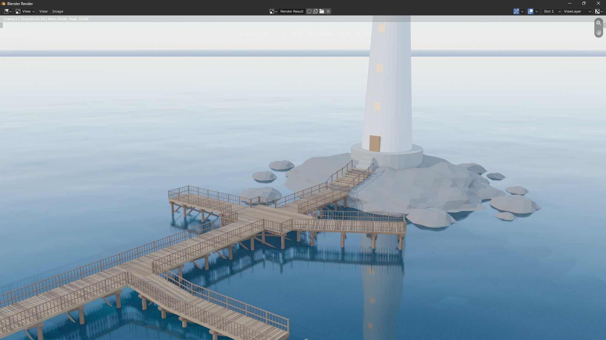
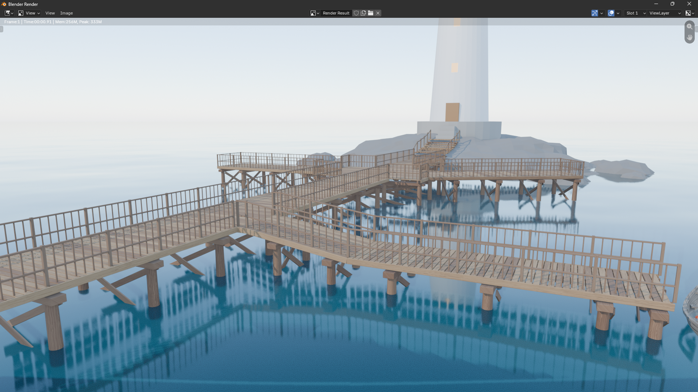
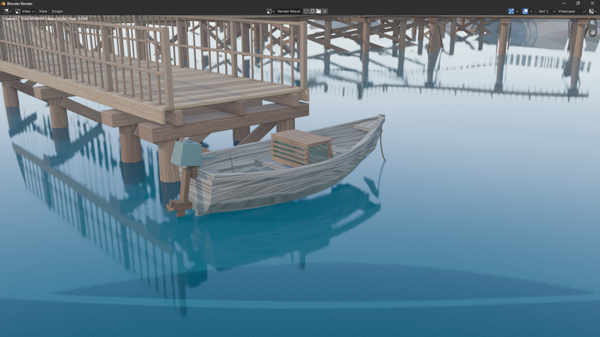
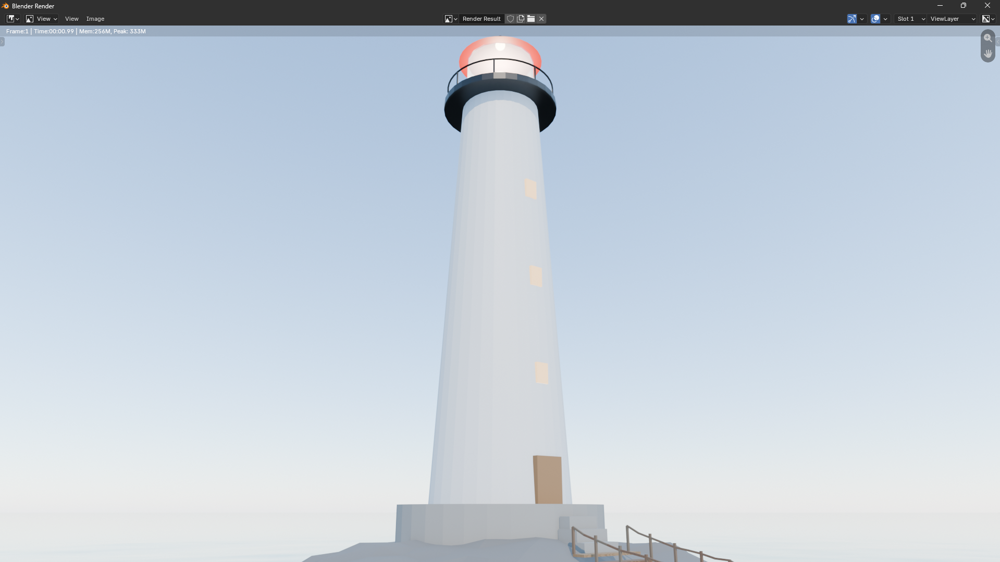
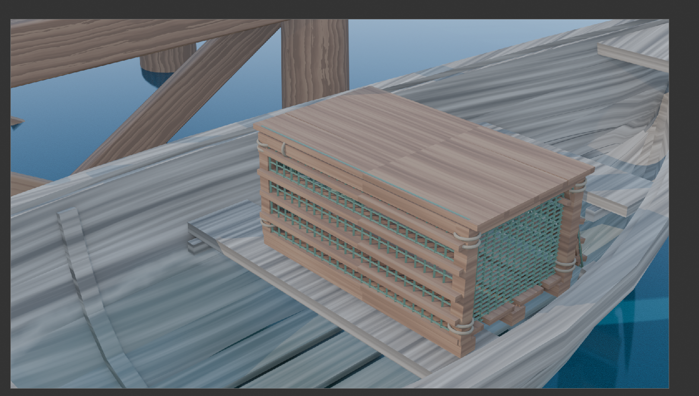
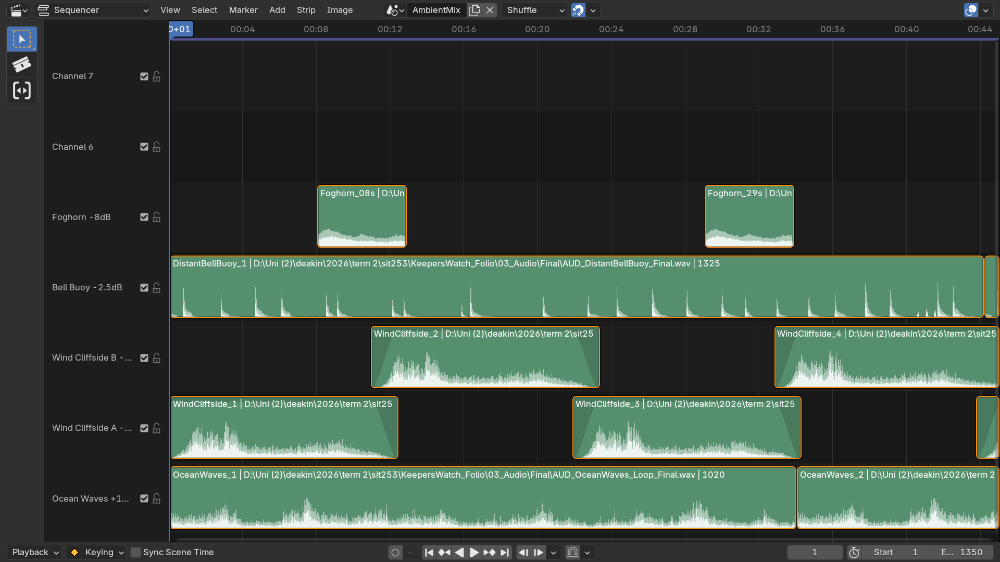

All 4 finished assets — the Lighthouse Lamp Housing, Pier, Rowboat, and Lobster Trap — composed together in one scene, at consistent scale and lighting, with the ambient audio beds layered on top. This is the demonstration of how the individually-modelled props actually come together to tell the folio inquiry's story, rather than existing as four disconnected gallery pieces.
The composed scene





Ambient audio mix

How this ties back to the inquiry
The query frames the tower as the center of the experience, and the lighthouse, which is at the highest point, provides the obvious visual anchor that the pier path goes toward. Since the walkway, which stretches from the beach to the rocky foundation, is the main route a visitor would follow through the area, its size and the uniform twilight lighting throughout each asset were given more weight than the specifics of any one prop.
The Rowboat and Lobster Trap grouping accomplishes the most narrative work since the boat is moored to a pier post rather than floating, and the trap is located within the boat rather than outside on the pier. The purpose of such arrangement is to use what has been left behind, rather than text, to raise the same issue that forms the basis of the folio inquiry ("what happened to the keeper?"). Someone tied them up, left the trap, and never returned.
The ambient audio mix sonically reinforces the same "quiet, abandoned" read: the Foghorn appears only twice throughout the mix as a sparse, occasional accent rather than a loop; Ocean Waves and Wind Cliffside sit as the constant, close presence (loudest in the mix, since a visitor standing on the pier would be closest to both); and the Distant Bell Buoy is pulled back to read as far offshore. This is consistent with the spatial-audio logic that has previously been mentioned in the References page (Poeschl & Doering, 2013; Almeida et al., 2023) on how sound reinforces presence rather than merely decorates it.